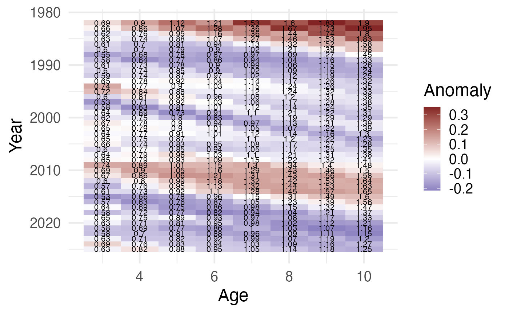
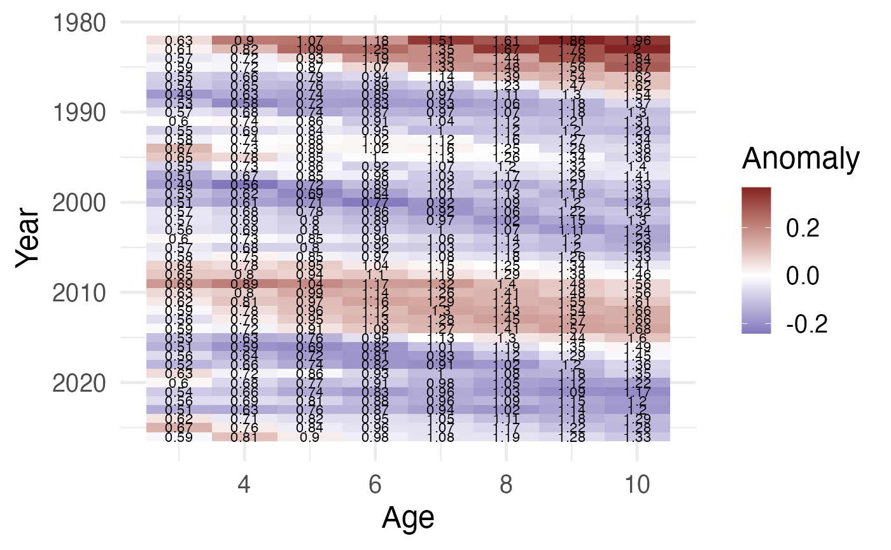
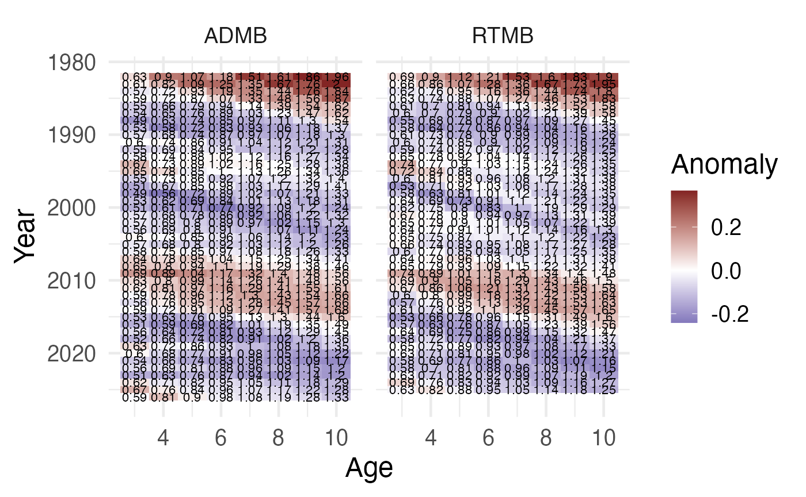

WtAgeRe ebspollock example
00-ebspollock-example.RmdExample: EBS pollock
This vignette shows an RTMB workflow (no ADMB toolchain required)
using the examples/ebspollock dataset, and an optional ADMB
comparison when a .rep file is already available.
library(WtAgeRe)
example_dir <- here::here("examples", "ebspollock")
base <- file.path(example_dir, "wt")
has_rtmb_api <- "fit_wt_rtmb" %in% getNamespaceExports("WtAgeRe")
# RTMB fit from wt.dat
if (has_rtmb_api && requireNamespace("RTMB", quietly = TRUE) && file.exists(paste0(base, ".dat"))) {
fit_rtmb <- fit_wt_rtmb(
datfile = paste0(base, ".dat"),
control = list(iter.max = 200, eval.max = 400)
)
pred_rtmb <- fn_get_pred(fit = fit_rtmb, source = "RTMB")
fn_plot_anoms(pred_rtmb)
}
# Optional ADMB comparison (requires an existing wt.rep)
if (file.exists(paste0(base, ".rep"))) {
pred_admb <- fn_get_pred(file = base, source = "ADMB")
fn_plot_anoms(pred_admb)
}
if (exists("pred_rtmb") && exists("pred_admb")) {
pred_both <- rbind(pred_admb, pred_rtmb)
fn_plot_anoms(pred_both)
}